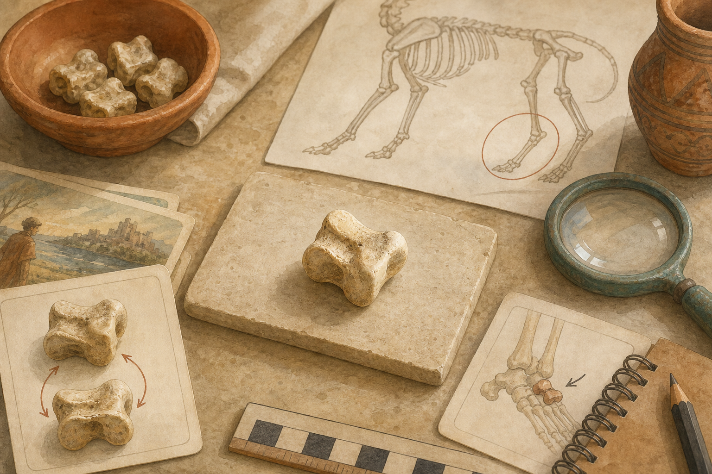

Exemple élève
Achille : du talon au petit os

On connaît souvent l'expression "le talon d'Achille", qui veut dire le point faible d'une personne forte. Mais cette version ne vient pas simplement des récits grecs les plus anciens. Les histoires d'Achille ont changé avec le temps.
Le mot talus invite à regarder la région de la cheville et le talus/astragale, un os important pour l'articulation du pied. Notre image est une illustration pédagogique : elle aide à comprendre, mais elle n'est pas une source antique.
Source utilisée
Schéma du talus et discussion en classe à partir du corpus de l'activité 3.